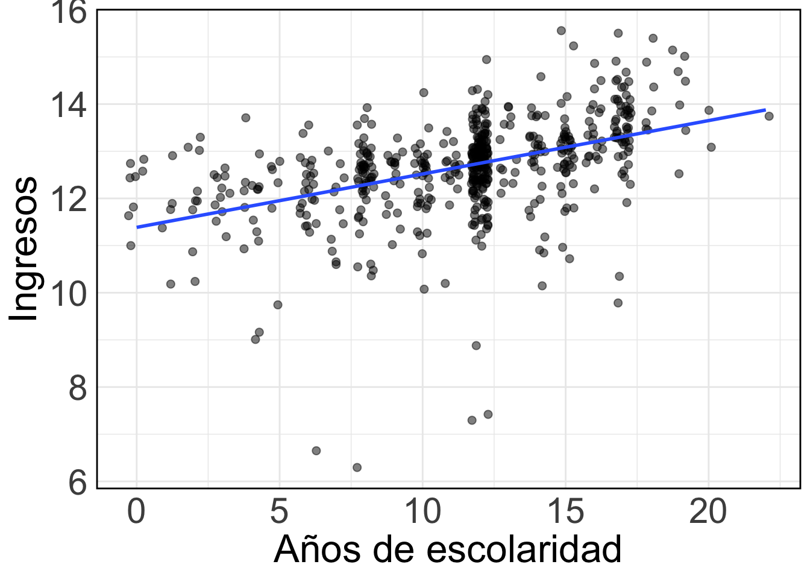

library("tidyverse")
url <- "https://raw.githubusercontent.com/mebucca/dar_soc4001/master/data/sample_casen2017.csv"
casen2017 <- read.csv(url) %>% as_tibble() %>%
mutate(ingreso = yautcor) %>%
select(region,sexo,edad,esc,educ,ingreso) %>%
mutate(univ = case_when(educ==11 | educ==12 & edad > 27 ~ 1, educ < 11 & edad > 27 ~ 0),
universitario = case_when(univ==1 ~ "Grado universitario", univ==0 ~ "Menos que grado universitario"),
genero = case_when(sexo==1 ~ "Hombre", sexo==2 ~ "Mujer"))SOL114 Análisis de Datos II
Problema
Datos:
Problema 1:
En relación a las brechas salariales por género la teoría del Capital Humano argumenta que esta brecha se explica en parte por las disparidades en el logro educativo de hombres y mujeres. Específicamente, Esta teoría sugiere que, dado que un mayor nivel educativo generalmente conduce a ingresos más altos, la brecha salarial observada podría ser en gran parte el resultado de diferencias promedio en la educación entre géneros.
Referencia bibliográfica: Blau, Francine D. y Lawrence M. Kahn. (2017). “The Gender Wage Gap: Extent, Trends, and Explanations”. En Journal of Economic Literature.
La siguiente tabla de contingencia, basada en una submuestra de la Encuesta CASEN 2017, muestra la distribución de frecuencias conjunta de género y logro de un grado universitario.En base a los resultados de la tabla:
Calcula la distribución de probabilidad conjunta de género y logro de un grado universitario
Obtén la distribuciones marginales de ambas variables
Calcula las frecuencias esperadas bajo el supuesto de independencia entre ambas
Calcula un test de \(\chi2\) para testear la hipótesis de independencia a un nivel de significación del 5%.
Obtén conclusiones sustantivas
| Hombre | Mujer | |
|---|---|---|
| Grado universitario | 43 | 38 |
| Menos que grado universitario | 270 | 274 |
Problema 2:
Además de la asociación entre género y logro educacional, el otro supuesto detrás del argumento expuesto anteriormente es que un mayor nivel educativo generalmente conduce a ingresos más altos, es decir, que existe una asociación positiva entre logro educacional e ingresos. En esta linea, el siguiente gráfico muestra la relación entre años de escolaridad y el logaritmo natural de los ingresos:

Adicionalmente, la siguiente tabla muestra la matriz de varianza-covarianza entre los años de escolaridad y el logaritmo natural de los ingresos:
escolaridad log(ingreso)
escolaridad 17.556790 1.987789
log(ingreso) 1.987789 1.098622donde,
Los elementos en la diagonale representan las varianzas de cada variable. Es decir, la varianza de una variable en relación consigo misma.
Los elementos fuera de la diagonal representan las covarianzas entre pares de variables. La covarianza mide cómo dos variables cambian juntas.
La matriz es simétrica, lo que significa que la covarianza entre la variable A y la variable B es igual a la covarianza entre B y A.
Usando esta información,
Calcula el coeficiente de correlación de Pearson entre escolaridad y log(ingreso).
Interpreta el resultado obtenido
Obtén conclusiones sustantivas